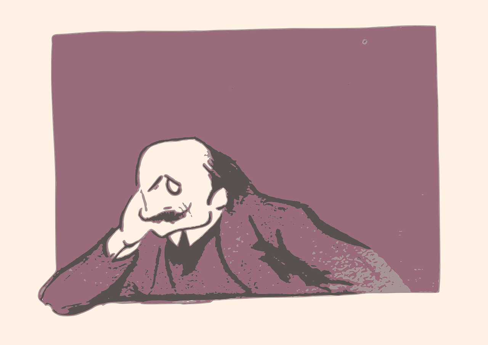

شاعری کی دنیا 
احمد فراز
سنا ہے لوگ اسے آنکھ بھر کے دیکھتے ہیں
سو اس کے شہر میں کچھ دن ٹھہر کے دیکھتے ہیں
سنا ہے ربط ہے اس کو خراب حالوں سے
سو اپنے آپ کو برباد کر کے دیکھتے ہیں
سنا ہے درد کی گاہک ہے چشم ناز اس کی
سو ہم بھی اس کی گلی سے گزر کے دیکھتے ہیں
سنا ہے اس کو بھی ہے شعر و شاعری سے شغف
سو ہم بھی معجزے اپنے ہنر کے دیکھتے ہیں
سنا ہے بولے تو باتوں سے پھول جھڑتے ہیں
یہ بات ہے تو چلو بات کر کے دیکھتے ہیں
سنا ہے رات اسے چاند تکتا رہتا ہے
ستارے بام فلک سے اتر کے دیکھتے ہیں
سنا ہے دن کو اسے تتلیاں ستاتی ہیں
سنا ہے رات کو جگنو ٹھہر کے دیکھتے ہیں
سنا ہے حشر ہیں اس کی غزال سی آنکھیں
سنا ہے اس کو ہرن دشت بھر کے دیکھتے ہیں
سنا ہے رات سے بڑھ کر ہیں کاکلیں اس کی
سنا ہے شام کو سائے گزر کے دیکھتے ہیں
سنا ہے اس کی سیہ چشمگی قیامت ہے
سو اس کو سرمہ فروش آہ بھر کے دیکھتے ہیں
سنا ہے اس کے لبوں سے گلاب جلتے ہیں
سو ہم بہار پہ الزام دھر کے دیکھتے ہیں
سنا ہے آئنہ تمثال ہے جبیں اس کی
جو سادہ دل ہیں اسے بن سنور کے دیکھتے ہیں
سنا ہے جب سے حمائل ہیں اس کی گردن میں
مزاج اور ہی لعل و گہر کے دیکھتے ہیں
سنا ہے چشم تصور سے دشت امکاں میں
پلنگ زاویے اس کی کمر کے دیکھتے ہیں
سنا ہے اس کے بدن کی تراش ایسی ہے
کہ پھول اپنی قبائیں کتر کے دیکھتے ہیں
وہ سرو قد ہے مگر بے گل مراد نہیں
کہ اس شجر پہ شگوفے ثمر کے دیکھتے ہیں
بس اک نگاہ سے لٹتا ہے قافلہ دل کا
سو رہروان تمنا بھی ڈر کے دیکھتے ہیں
سنا ہے اس کے شبستاں سے متصل ہے بہشت
مکیں ادھر کے بھی جلوے ادھر کے دیکھتے ہیں
رکے تو گردشیں اس کا طواف کرتی ہیں
چلے تو اس کو زمانے ٹھہر کے دیکھتے ہیں
کسے نصیب کہ بے پیرہن اسے دیکھے
کبھی کبھی در و دیوار گھر کے دیکھتے ہیں
کہانیاں ہی سہی سب مبالغے ہی سہی
اگر وہ خواب ہے تعبیر کر کے دیکھتے ہیں
اب اس کے شہر میں ٹھہریں کہ کوچ کر جائیں
فرازؔ آؤ ستارے سفر کے دیکھتے ہیں
رنجش ہی سہی دل ہی دکھانے کے لیے آ
آ پھر سے مجھے چھوڑ کے جانے کے لیے آ
کچھ تو مرے پندار محبت کا بھرم رکھ
تو بھی تو کبھی مجھ کو منانے کے لیے آ
پہلے سے مراسم نہ سہی پھر بھی کبھی تو
رسم و رہ دنیا ہی نبھانے کے لیے آ
کس کس کو بتائیں گے جدائی کا سبب ہم
تو مجھ سے خفا ہے تو زمانے کے لیے آ
اک عمر سے ہوں لذت گریہ سے بھی محروم
اے راحت جاں مجھ کو رلانے کے لیے آ
اب تک دل خوش فہم کو تجھ سے ہیں امیدیں
یہ آخری شمعیں بھی بجھانے کے لیے آ
اب کے ہم بچھڑے تو شاید کبھی خوابوں میں ملیں
جس طرح سوکھے ہوئے پھول کتابوں میں ملیں
ڈھونڈ اجڑے ہوئے لوگوں میں وفا کے موتی
یہ خزانے تجھے ممکن ہے خرابوں میں ملیں
غم دنیا بھی غم یار میں شامل کر لو
نشہ بڑھتا ہے شرابیں جو شرابوں میں ملیں
تو خدا ہے نہ مرا عشق فرشتوں جیسا
دونوں انساں ہیں تو کیوں اتنے حجابوں میں ملیں
آج ہم دار پہ کھینچے گئے جن باتوں پر
کیا عجب کل وہ زمانے کو نصابوں میں ملیں
اب نہ وہ میں نہ وہ تو ہے نہ وہ ماضی ہے فرازؔ
جیسے دو شخص تمنا کے سرابوں میں ملیں
زندگی سے یہی گلہ ہے مجھے
تو بہت دیر سے ملا ہے مجھے
تو محبت سے کوئی چال تو چل
ہار جانے کا حوصلہ ہے مجھے
دل دھڑکتا نہیں ٹپکتا ہے
کل جو خواہش تھی آبلہ ہے مجھے
ہم سفر چاہیئے ہجوم نہیں
اک مسافر بھی قافلہ ہے مجھے
کوہ کن ہو کہ قیس ہو کہ فرازؔ
سب میں اک شخص ہی ملا ہے مجھے